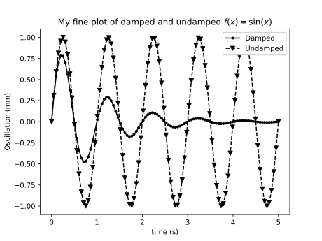

Python for Scientific Computing¶
Abstract¶
Python is a modern, object-oriented programming language, which has become popular in several areas of software development. This course discusses how Python can be utilized in scientific computing. The course starts by introducing the main Python package for numerical computing, NumPy, and discusses then SciPy toolbox for various scientific computing tasks as well as visualization with the Matplotlib package.
Motivation¶
Why Python¶
Python has become popular, largely due to good reasons. It’s very easy to get started, there’s lots of educational material, a huge amount of libraries for doing everything imaginable. Particularly in the scientific computing space, there is the Numpy, Scipy, and matplotlib libraries which form the basis of almost everything. Numpy and Scipy are excellent examples of using Python as a glue language, meaning to glue together battle-tested and well performing code and present them with an easy to use interface. Also machine learning and deep learning frameworks have embraced python as the glue language of choice. And finally, Python is open source, meaning that anybody can download and install it on their computer, without having to bother with acquiring a license or such. This makes it easier to distribute your code e.g. to collaborators in different universities.
Why not Python for Scientific Computing¶
While Python is extremely popular in scientific computing today, there are certainly things better left to other tools.
- Implementing performance-critical kernels. Python is a very slow language, which often doesn’t matter if you can offload the heavy lifting to fast compiled code, e.g. by using Numpy array operations. But if what you’re trying to do isn’t vectorizable then you’re out of luck. An alternative to Python, albeit much less mature and with a smaller ecosystem, but which provides very fast generated code, is Julia.
- Creating libraries that can be called from other languages. In this case you’ll often want to create a library with a C interface, which can then be called from most languages. Suitable languages for this sort of task, depending on what you are doing, could be Rust, C, C++, or Fortran.
- You really like static typing, or functional programming approaches. Haskell might be what you’re looking for.
Python 2 vs Python 3¶
There are two slightly incompatible versions of Python being used today, 2 and 3. Most large projects have supported 3 for a long time already, and have announced dropping Python 2 support for future versions (or have already done so), so at this point you should use version 3 unless you’re working on an existing project that for some reason hasn’t yet been ported to version 3. Accordingly, in this course we will use Python 3. For more info, see Python 3 statement by many other the major projects.
Practical details¶
The instructor will use the anaconda3/latest module available on
triton. However, if you have Python 3 with the usual scientific
libraries installed locally on your laptop, you should be able to use
that as well, if you prefer.
For interactively testing things in Python, you can use a Jupyter
notebook, or the ipython shell. For writing Python code you will
need a text editor or IDE; Jupyter Lab does have one, if you prefer to
work in a browser based environment. Popular free programming text
editors or IDE’s with good Python support include:
- Emacs
- Vim
- VS Code
- Spyder
- Eclipse + PyDev
- PyCharm
You’re not expected to know much Python at the start of the course, but a little bit of programming proficiency is needed as a prerequisite.
Although not necessary for this course, knowledge of a version control system is useful when programming (or writing papers with LaTeX or other text-based formats). The most common and powerful version control system today is git. To get started with git, see our list of Git tutorials.
The course focuses on hands-on demonstrations and exercises rather than lectures.
Introduction to Python¶
If you are not familiar with Python, a very short introduction; first, the builtin scalar and collection types:
Scalars¶
Scalar types, that is, single elements of various types:
i = 42 # integer
i = 2**77 # Integers are arbitrary precision
g = 3.14 # floating point number
c = 2 - 3j # Complex number
b = True # boolean
s = "Hello!" # String (Unicode)
q = b'Hello' # bytes (8-bit values)
Collections¶
Collections are data structures capable of storing multiple values.
l = [1, 2, 3] # list
l[1] # lists are indexed by int
l[1] = True # list elements can be any type
d = {"Janne": 123, "Richard": 456} # dictionary
d["Janne"]
s = set() # Set of unique values
Control structures¶
Python has the usual control structures, that is conditional statements and loops:
x = 2
if x == 3:
print('x is 3')
elif x == 2:
print('x is 2')
else:
print('x is something else')
While loops loop until some condition is met:
x = 0
while x < 42:
print('x is ', x)
x += 0.2
For loops loop over some collection of values:
xs = [1, 2, 3, 4]
for x in xs:
print(x)
Often you want to loop over a sequence of integers, in that case the
range function is useful:
for x in range(9):
print(x)
Another common need is to iterate over a collection, but at the same
time also have an index number. For this there is the enumerate
function:
xs = [1, 'hello', 'world']
for ii, x in enumerate(xs):
print(ii, x)
Functions and classes¶
Python functions are defined by the def keyword. They take a
number of arguments, and return a number of return values.
def hello(name):
"""Say hello to the person given by the argument"""
print('Hello', name)
return 'Hello ' + name
Classes are defined by the class keyword:
class Hello:
def __init__(self, name):
self._name = name
def say(self):
print('Hello', self._name)
Python type system¶
Python is strongly and dynamically typed.
Strong here means, roughly, that it’s not possible to circumvent the type system (at least, not easily, and not without invoking undefined behavior).
x = 42
type(x)
x + "hello"
Dynamic typing means that types are determined at runtime, and a variable can be redefined to refer to an instance of another type:
x = 42
x = "hello"
Jargon: Types are associated with rvalues, not lvalues. In statically typed language, types are associated with lvalues, and are (typically) reified during compilation.
Organizing Python code¶
Start Python scripts with
#!/usr/bin/env python3
This ensures you get the correct python3 for the environment you are using.
In general, don’t put executable statements directly into the top level scope in your files (modules), as this code is then run if you try to import the module.
Instead, use this common idiom:
if __name__ == '__main__':
# your code goes here
When developing code it’s often convenient to be able to reload a
module into your IPython (or IPython notebook) session without having
to restart the entire session. This can be done with the reload
function:
from importlib import reload
import foo
foo.bar()
# Edit foo.py
reload(foo)
foo.bar()
Exercise 1.1¶
Who needs numpy anyway? Implement matrix multiplication with nested lists as your matrix representation. Hint for beginners: Create one function
def creatematrix(n, m):
# ...
which creates an NxM matrix filled with random values (e.g. random.random()). Then create another function
def matrixmult(a, b):
# ...
which multiplies together two matrices a and b.
Exercies 1.2¶
Lets continue with the previous example, and add some object oriented scaffolding around our matrix code. Create a Matrix class with a constructor to create the random matrix, and overload the ‘*’ operator to multiply two Matrix instances. Reuse the code from the previous exercise.
Exercise 1.3¶
The essence of science is experiment and measurement. So lets measure our matrix multiplication implementation, and calculate how fast it can multiply matrices, in terms of “Gflops/s” (Giga floating point operations per second). Hint: A “flop” is a floating point multiply or addition/subtraction. First figure out of many flops are needed to multiply two matrices. Then you need to time it; for this you can use the IPython magic %timeit command. And finally, equipped with this information, you can calculate a Gflops/s score for you multiplication method.
Exercise 1.4¶
Basic file I/O. Run the following python snippet to create a file
pangrams.txt:
with open('pangrams.txt', 'w') as f:
f.write("""The quick brown fox jumps over the lazy dog
Sphinx of black quartz, judge my vow
The dog ate my homework
Pack my box with five dozen liquor jugs
""")
Next, create Python code to read that file, and check each line whether it’s a pangram. A pangram is a sentence to uses all the letters of the alphabet.
Enter NumPy¶
Introduction¶
The NumPy package provides a N-dimensional array type, and syntax and utility functions for working with these arrays.
In contrast to a python list, a numpy array can only hold elements of the same type. The element type can be seen via the ‘dtype’ attribute.
import numpy as np
a = np.array(((1,2,3),(4,5,6)))
a.dtype
a[0, 0] = "hello" # error!
a[0, 0] = 2**100 # error!
What these restrictions buy you is that the memory layout of a numpy array is very efficient, similar to what you see in low level languages like C or Fortran. This means operating on these arrays is very efficient; in fact, much of the speed advantage of numpy comes from the fact that array syntax is implemented in fast C code.
Due to the memory layout of numpy being compatible with C and Fortran, numpy arrays allows one to use functionality written in these other languages. Much of the SciPy ecosystem (NumPy, SciPy, etc.) consist of python wrappers around widely used and battle-tested numerical libraries written in C or Fortran such as LAPACK and BLAS.
The Python list
a_list = [1, "hello", 1.2]
has roughly the following layout in memory:

In contrast, the NumPy array
n = np.array((1,2,3))
has the memory layout like

Exercise 2.1¶
- In the example above we saw that
2**100was too large. What is the default datatype of a numpy integer array if we don’t explicitly specify some type, and what is the largest possible integer we can store in such an element. - What is the smallest negative element (that is, the largest absolute value of a negative number)? Is it different from the largest positive number, and if so, why?
- What is the absolute value of the smallest negative element? Why?
Other ways of creating NumPy arrays¶
There are many different ways to create NumPy arrays, here’s a few of the most common ones:
np.zeros((2, 3)) # 2x3 array with all elements 0
np.ones((3, 2), bool) # 3x2 boolean array
np.arange(3) # Evenly spaced values in an interval
np.linspace(..) # similar to above
NumPy array slicing syntax¶
NumPy provides a convenient array syntax to reference subarrays, similar to MATLAB for Fortran.
a[low:high:step]
returns the array elements in the range [low, high) with a stride
of step. Equivalently for multidimensional arrays. For
multidimensional arrays NumPy by default stores arrays in row-major
order, like C. Note that this is in contrast to e.g. Fortran, MATLAB
or Julia that use a column-major layout.
Using array syntax efficiently is key to using NumPy in a fashion that leads to short as well as efficient code.
NumPy also provides so-called advanced indexing, where you can select elements with a list of indices.
a = np.zeros((3, 3))
b = a[(0, 1), (1, 1)]
b[0] = 1 # Will this modify a?
Views vs. copies¶
When slicing an array, you DO NOT get a copy of those elements, but rather a view. That is, the data elements are the same as in the original array
a = np.ones((2, 2))
b = a[1, 1:2]
b[0] = 2
Views rather than copies is more efficient, particularly for large arrays, but they can sometimes be confusing. Be careful!
If you do need a copy, NumPy arrays have a copy method to create a
copy rather than getting a view.
NOTE With advanced indexing, you always get a copy!
Array shape and size¶
NumPy arrays have a shape and size attribute.
a = np.zeros((2,3))
a.size # Number of elements
a.shape # shape tuple
We can modify the shape of an array with the reshape or resize
methods. Or for the special case of flattening an array to a 1D array,
ravel.
Combining, splitting and rolling arrays¶
For combining multiple arrays into a larger array, see the
concatenate, stack, block, and the more specialized
variants hstack, vstack, dstack.
Similarly, for splitting an array into multiple parts, there’s
split, hsplit, vsplit.
To roll an array, that is shift the elements along a give axis, use
roll.
Exercise 2.2¶
Create an array x of 100 evenly spaced numbers in the range
[-2*pi, 2*pi].
Next, create an array y, where each element is the sin of each
element in the previously created array.
Then, figure out the indices where the array y changes sign. What
are the x values for these indices?
NumPy I/O¶
NumPy has functionality for saving and loading NumPy arrays from
files. For reading/writing textfiles there is loadtxt and
savetxt. See also genfromtxt with more sophisticated handling
of missing values etc.
For large arrays, it’s faster to use a binary format. For these NumPy
defines a .npy format. Loading and saving these files can be done
with the load and save methods. There’s also the .npz
format, which is a zip archive containing several numpy ndarrays in
one file. .npz format files can be read/written with load,
savez and savez_compressed methods. This is a good choice for
temporary or intermediate files such as checkpoints etc. Note that the
format is Numpy-specific, and other languages might not easily be able
to read it. Similarly, for long-term archiving other formats might be
a better choice.
Random Numbers in NumPy¶
The numpy.random module contains functionality to create
pseudorandom numbers following different distributions.
Linear algebra in Numpy¶
The dot method provides a generalized dot product. It can compute
dot products of 1D vectors, matrix-vector products as well as
matrix-matrix products. It is an interface to the famous BLAS
library, of which multiple highly optimized versions exist. The
numpy.linalg module contains interfaces to the most common linear
algebra operations, such as calculating eigenvalues, Cholesky and
singular value decompositions, solving linear systems, least squares,
(pseudo)inverse. This module is an interface to the LAPACK library
(which in turn builds on top of BLAS).
Exercise 2.3¶
Remember our first exercise, implementing matrix multiplication? Now
do the same, but use NumPy arrays and the dot method. Compare
performance to the code you wrote yourself earlier, using the IPython
%timeit macro.
Exercise 2.4¶
Here’s a number of quick numpy exercises to get you a feel of numpy functionality, index manipulation etc.
- Reverse a vector. Given a vector, reverse it such that the last element becomes the first, e.g. [1, 2, 3] => [3, 2, 1]
- Create an identity matrix of size 4x4.
- Create a 2D array with zeros on the borders and 1 inside.
- Create a random array with elements [0, 1), then add 10 to all elements in the range [0.2, 0.7).
- What is
np.round(0.5)? What isnp.round(1.5)? Why? - In addition to
np.round, explorenp.ceil,np.floor,np.trunc. In particular, take note of how they behave with negative numbers. - Recall the identity \(\sin^2(x) + \cos^2(x) = 1\). Create a
random 4x4 array with values in the range [0, 10). Now test the
equality with
np.equal. What result do you get withnp.allclose``instead of ``np.equal? - Create a 1D array with 10 random elements. Sort it.
- What’s the difference between
np_array.sort()andnp.sort(np_array)? - For the random array in question 8, instead of sorting it, perform an indirect sort. That is, return the list of indices which would index the array in sorted order.
- Create a 4x4 array of zeros, and another 4x4 array of ones. Next combine them into a single 8x4 array with the content of the zeros array on top and the ones on the bottom. Finally, do the same, but create a 4x8 array with the zeros on the left and the ones on the rigth.
More quick NumPy exercises like this one over here.
Exercise 2.5¶
The topic of this exercise is np.einsum which implements the
‘Einstein summation convention’. The Einstein summation convention is a commonly used
when working with tensors, but can also be useful for succintly
representing array expressions.
For instance, matrix multiplication can be expressed as
Implement this with the help of np.einsum.
Einstein notation is also available in pytorch and tensorflow. For more information about Einstein notation in NumPy see
SciPy¶
SciPy is a library that builds on top of NumPy. It contains a lot of interfaces to battle-tested numerical routines written in Fortran or C, as well as python implementations of many common algorithms. Briefly, it contains functionality for
- Special functions (Bessel, Gamma, etc.)
- Numerical integration
- Optimization
- Interpolation
- Fast Fourier Transform (FFT)
- Linear algebra (more complete than in NumPy)
- Sparse matrices
- Statistics
- More I/O routine, e.g. Matrix Market format for sparse matrices, MATLAB files (.mat), etc.
Exercise 3.1¶
Using scipy, calculate the integral of the function sin in the
interval [0, pi], and compare with the analytical result.
Exercise 3.2¶
Use the SciPy sparse matrix functionality to create a random sparse
matrix with a probability of non-zero elements of 0.05 and size 10000
x 10000. The use the SciPy sparse linear algebra support to calculate
the matrix-vector product of the sparse matrix you just created and a
random vector. Use the %timeit macro to measure how long it
takes. Does the optional format argument when you create the
sparse matrix make a difference?
Then, compare to how long it takes if you’d instead first convert the
sparse matrix to a normal NumPy dense array, and use the NumPy dot
method to calculate the matrix-vector product.
Can you figure out a quick rule of thumb when it’s worth using a sparse matrix representation vs. a dense representation?
Matplotlib¶
Matplotlib is the ‘standard’ Python plotting library. It is quite full-featured, and provides a MATLAB-like plotting API.
To use it, typically you start with
import matplotlib.pyplot as plt
# ...
x = linspace(-4, 4)
plt.plot(x, np.sin(x))
plt.show()
When using Jupyter notebooks, use the magic
%matplotlib inline
which will cause matplotlib plots to appear inline in the notebooks. Very convenient for quick analysis!
Matplotlib has two slightly different interfaces, a state machine interface similar to MATLAB and an object based interface. The state machine interface is quick and easy to get started, but since it’s based on hidden global state behind the scenes, for more complex stuff it might get confusing. Below is an example using the state machine interface.
import numpy as np
import matplotlib.pyplot as plt
x = np.linspace(0.0, 3.0)
y1 = np.cos(2 * np.pi * x) * np.exp(-x)
y2 = np.cos(2 * np.pi * x)
plt.subplot(2, 1, 1)
plt.plot(x, y1, 'o-')
plt.title('A tale of 2 subplots')
plt.ylabel('Damped oscillation')
plt.subplot(2, 1, 2)
plt.plot(x, y2, '.-')
plt.xlabel('time (s)')
plt.ylabel('Undamped')
plt.show()
And here is the same thing, but using the object-based interface
import numpy as np
import matplotlib.pyplot as plt
x = np.linspace(0.0, 3.0)
y1 = np.cos(2 * np.pi * x) * np.exp(-x)
y2 = np.cos(2 * np.pi * x)
fig = plt.figure()
ax = fig.add_subplot(211)
ax.plot(x, y1, 'o-')
ax.set_title('A tale of 2 subplots, OO style')
ax.set_ylabel('Damped oscillation')
ax = fig.add_subplot(212)
ax.plot(x, y2, '.-')
ax.set_xlabel('time (s)')
ax.set_ylabel('Undamped')
plt.show()
Exercise 4.1¶
Try to recreate the figure below:
Exercise 4.2¶
Create 1000 normally distributed numbers with \(\mu = 0\) and \(\sigma = 10\). Then create a histogram plot with 50 bins.
Exercise 4.3¶
Often it’s useful to be able to plot things on a logarithmic scale. Create a plot with 4 subplots, one with a linear scale, one with logarithmic scale on the x-axis, one with logarithmic scale on the y-axis. Then create 4 functions, such that each will produce a straight line in one of the plots, and plot them.
Image and pseudocolor plots¶
Matplotlib can also plot 2D data such as images. A common type of 2D plot is the pseudocolor plot, where you want to convert a scalar value in some range into a color value. This means that you must map the range of values into a colormap. Things to think about when selecting a colormap:
- The map should be perceptually uniform. From https://bids.github.io/colormap/ : A “perceptually uniform” colormap is one for which the “perceptual deltas” plot makes a simple horizontal line. (This is essentially the derivative of the colormap in perceptual space with respect to the data. We want our colormap to have the property that if your data goes from 0.1 to 0.2, this should create about the same perceptual change as if your data goes from 0.8 to 0.9. For color geeks: we’re using CAM02-UCS as our model of perceptual distance.)
- It should look good when rendered in gray-scale, e.g. if someone prints the picture on a black-and-white printer. Or sometimes per-page costs in journals are lowers if everything is BW.
- It should make sense to people with the most common type of color blindness (red-green). In practice this means the color maps shouldn’t use both green and red colors, so that they are not confused.
Bad news: The commonly used rainbow (or “jet” as it’s often called) is very bad when comparing against these criteria! NEVER USE IT! It was the default in matplotlib < 2.0, and in MATLAB for a long time.
Good news: Matplotlib >= 2.0 has sane defaults here! See changes in default styles for matplotlib 2.0 . In particular, compare matplotlib < 2.0 default colormap and the matplotlib >= 2.0 default colormap. As an aside, the 2.0 default colormap (“viridis”) is similar to the default colormap in current versions of MATLAB (“parula”).
{kind=link}
{kind=link}
One case where you should NOT use viridis is if your data has some “natural” zero point. In that case it’s better to use a “cool-warm” style colormaps, see “Diverging Colormaps” at the matplotlib colormap reference.
N = M = 200
X, Y = np.ogrid[0:20:N*1j, 0:20:M*1j]
data = np.sin(np.pi * X*2 / 20) * np.cos(np.pi * Y*2 / 20)
fig, (ax2, ax1) = plt.subplots(1, 2, figsize=(7, 3))
im = ax1.imshow(data, extent=[0, 200, 0, 200])
ax1.set_title("v2.0: 'viridis'")
fig.colorbar(im, ax=ax1, shrink=0.8)
im2 = ax2.imshow(data, extent=[0, 200, 0, 200], cmap='jet')
fig.colorbar(im2, ax=ax2, shrink=0.8)
ax2.set_title("classic: 'jet'")
fig.tight_layout()
Exercise 4.4¶
Find an image on the internet or already on the machine you’re working
on, load it into a NumPy array (you can use imageio.imread() for
this), and see if you can create an Andy Warhol-like print by using a
suitable colormap.
Demo application¶
To demonstrate how to make a simple simulation program, here the lecturer will ‘live-code’ a small simulation program. For a suitable model, lets choose a suitably fascinating problem that can be simulated with a relatively simple model. First, some background.
Topological phase transitions¶
Historically, for a long time we believed there were two, and only two, kinds of phase transitions in nature. So-called discontinous, or first-order, transitions which are characterized by the presence of a latent heat (mathematically, a discontinuity in the first derivative of the free energy with respect to some thermodynamic parameter), whereas continuous phase transitions are characterized by a discontinuity in the second or higher derivative of the free energy.
However, in the 1970’ies, some experiments on ultrathin films of superfluid Helium-3 were made which produced data that existing theories could not describe. Eventually Kosterlitz and Thouless (and independently Berezinskii in the then Soviet Union) were able to describe what was happening. What they had discovered was an entirely new kind of phase transition which defied the existing classification schemes. Namely, there is NO discontinuity in any free energy derivative. So in a way, it’s an infinite-order phase transition.
What is happening is that topological defects (vortices in this case) in the system change how they interact with each other at the critical temperature. At low temperatures below the transition temperature the correlation function between spins decays as a power law, whereas above the transition temperature the correlation decays exponentially. This results in vortex-antivortex pairs at low temperature, and a vortex unbinding transition at the transition temperature with free vortices at higher temperatures.
This work eventually resulted in the 2016 Nobel Prize in Physics. See the scientific background for the 2016 physics prize.
The XY model¶
Topological phase transitions can be studied with a XY model (also called the planar model, or rotor model). Take a lattice with spins rotating in the plane. Each spin interacts with its neighbors, and the configuration energy of the system is given by
where the sum is over nearest neighbor spins.
In this case we can ignore the constant J which determines the interaction strength. Also, since the spin vectors are all of equal lengths the dot product can be simplified, so we have
The Metropolis-Hastings Monte Carlo algorithm¶
The Metropolis-Hastings algorithm is a Markov chain Monte Carlo method
that can be used for sampling a probability distribution. In this
case, the basic idea is that for each spin s we do a trial move,
to change the spin. We then calculate a random trial spin s', and
calculate an acceptance probability
In this case the probability density is the Boltzmann distribution
where \(\beta\) is the thermodynamic beta, or
where \(k_B\) is the Boltzmann constant. For this simulation we can set it to 1 and ignore it hereafter. \(\beta\) is thus just the inverse of the temperature.
Thus the quotient
can be calculated as
Then finally, calculate a uniform random number r in the interval
[0,1). If \(r \le A\) the new state is accepted. Repeating
this for all the spins constitutes a single Monte Carlo step in the
algorithm.
Other useful Scientific Python libraries¶
A few other widely used libraries in the Scientific Python ecosystem:
- Pandas: Python Data Analysis library. Pandas gives Python a dataframe type, similar to data frames in R, which is useful for representing tabular data where every column can be of a different type. If you’re interested in this topic, see the Practical R and Python Data Analysis course by Aalto Science-IT.
- scikit-learn: Machine Learning library. Implementations of the most common ML algorithms such as SVM, random forest, k-means, etc.
- Seaborn: Statistical data visualization. Plotting library that builds on top of matplotlib, providing a higher level interface aimed at visualizing statistical data.
- Cython: C-extensions for Python. Write fast C code in an extended subset of Python syntax.
- Numba: JIT compiler that can accelerate (some) loops with NumPy expressions.
- MPI for Python (mpi4py): Python bindings for the Message Passing Interface (MPI) standard for creating parallel applications using Python.
- SymPy: Symbolic mathematics in Python.
Homework: 2D Ising model¶
This homework exercise shares many similarities with the XY model
studied above. The main difference is that in the 2D Ising model, the
spins are perpendicular to the plane, and can take only two values,
+1 and -1. This model can be used to study the ferromagnetic
phase transition. Below the critical temperature ferromagnetic
domains, where the spins are aligned, form. Above the critical
temperature this order breaks down. In the Ising model the
configuration energy is defined as
where J is the exchange energy, \(\mu\) is the magnetic moment of the spins, and H is the external magnetic field in the direction perpendicular to the plane. To simplify, you can set J and \(\mu\) to 1.
Implement a simulation program simulating the 2D Ising model. Use the Metropolis-Hastings Monte Carlo algorithm. Visualize the results with matplotlib. Run the simulation at different temperatures and with different starting configurations (random vs. ordered), and see if you can find the critical temperature by observing your visualizations.
If you find the above too easy, a few topics for further exploration. Not needed to pass the course.
- Implement the Wolff algorithm, which flips whole clusters at a time instead of individual spins. This helps avoid a phenomena called critical slowing down close to the critical temperature, which is problematic for algorithms such as the Metropolis algorithm that flip one spin at a time.
- Calculate and plot the net magnetization, the magnetic susceptibility, and the heat capacity of the system as a function of the temperature. How do they behave around the critical temperature?